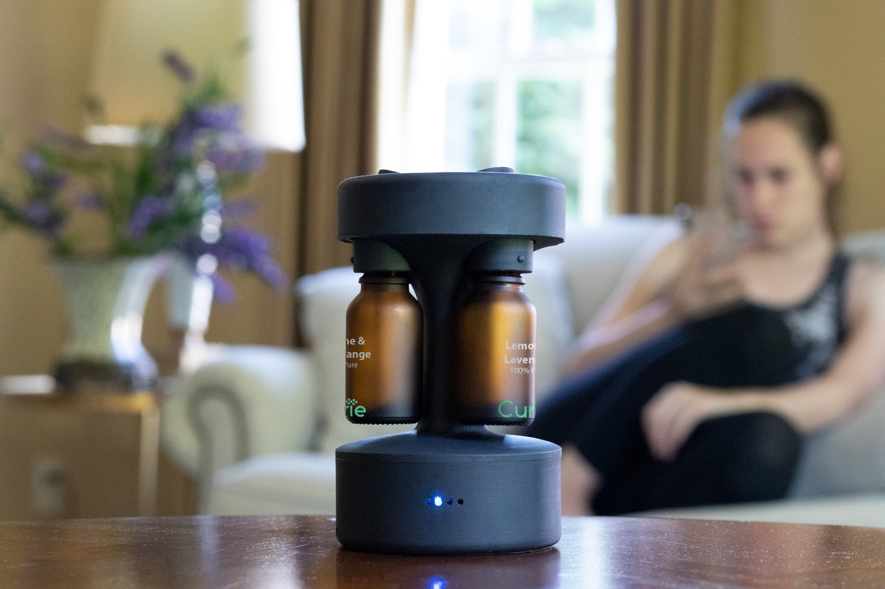
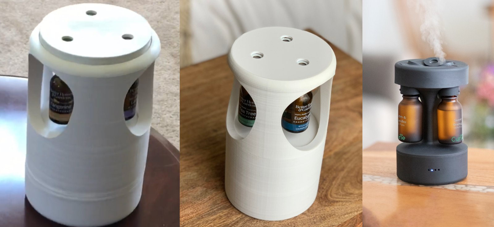
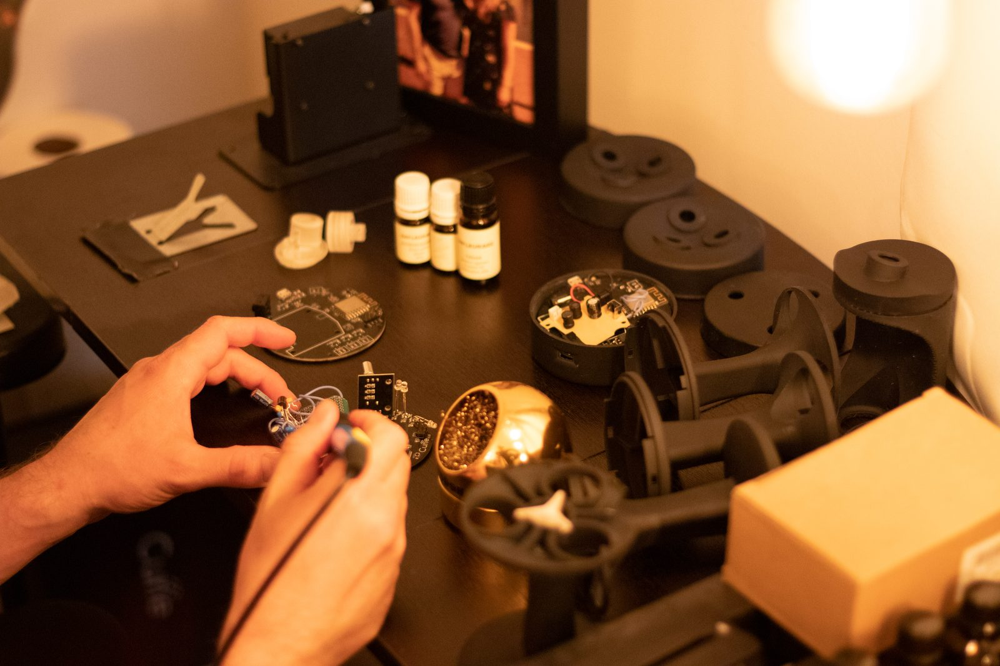
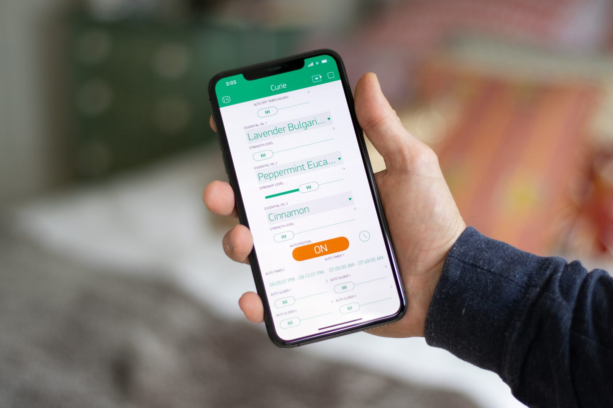
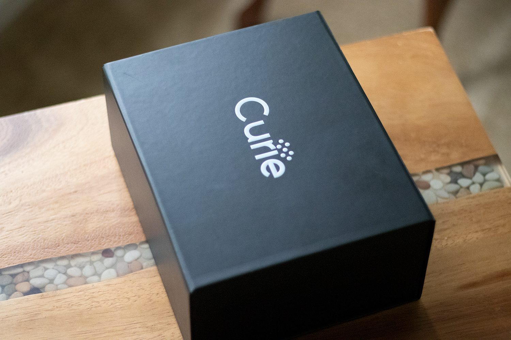
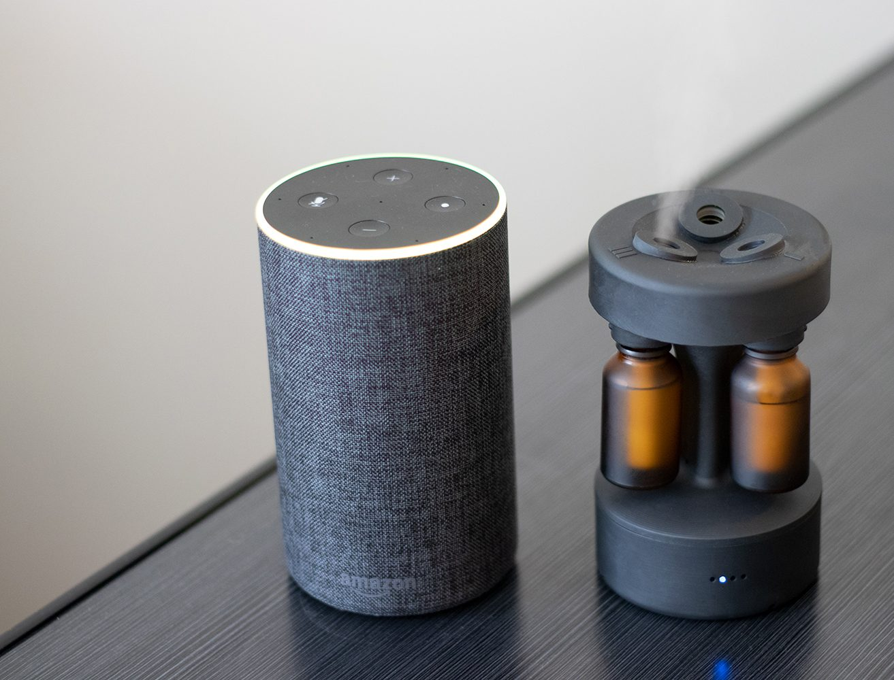

Curie.
A three-bottle piezoelectric essential oil diffuser. From 3D-printed concept to twenty-three paying customers.
Curie is a consumer essential oil diffuser I took from rough 3D-printed concept to shipped product. Industrial design, custom PCB, Arduino firmware, native iOS app, retail packaging. The mechanical design was mine — self-taught in Shapr3D, no formal background. Hardware and firmware specs were mine too, executed by two contract engineers I managed directly without a PM layer. Twenty-three units shipped to paying customers.

Three generations.
The first print, on the left, was a rough PLA shell with a piezoelectric transducer bolted in — just enough to prove the mist concept worked in the form factor I wanted. The second iteration refined the geometry, the airflow path, and the internal layout for serviceability.
The third, in matte black, is the production unit. SLA-printed housing, amber glass quick-connect bottles, custom PCB. The plume above it is the device running.

Hardware, firmware, app.
The PCB was laid out in Eagle by a contracted electrical engineer, against requirements I specified — rotary encoder input, four-LED status feedback, piezoelectric driver circuit, WiFi for app control. The silkscreen on that round board reads "Curie."
Firmware was written in Arduino by a contracted programmer, against a pin-map and behavior specification I drafted: timer-driven piezo pulses at four intensity levels, click-based UI, status feedback. The mechanical design — the housing, the bottle retention, the mist path, the base — was entirely mine in Shapr3D.

Three oils, independently scheduled.
The iOS app presents each bottle slot with its own strength slider and auto-timer schedule. Multiple oils can run simultaneously at independent intensities. Hardware, firmware, and app were built in parallel and integrated iteratively — a change to the firmware behavior spec usually meant a matching change in the app the same week.


Twenty-three units to paying customers.
Curie went out in retail-grade packaging to twenty-three paying customers. It lived on the same shelves as their existing smart-home gear — shown here next to an Echo for scale. I handled manufacturing coordination, assembly, packaging, and fulfillment.
The project wasn't scaled past that initial run. But it crossed the gap that mattered: from an idea in a notebook to a product people paid for, built, shipped, and used.